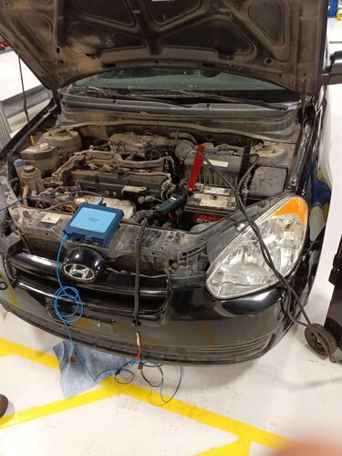

This project is all about my automotive experience. The situation was a Hyundai Accent would crank but not start. The task was to diagnose and repair the vehicle correctly so we can return the vehicle back to the customer and give them a running vehicle. The action we had to take was figuring out that the camshaft was not spinning because the timing belt had failed. We also had to diagnose a stubborn misfire that was giving us trouble. Overall, the results were successful and we were able to fix the vehicle for the customer. We achieved this diagnosis with all kinds of tools. Some important tools to note was mainly the oscilloscope that we used. We used the oscilloscope to check timing, compression test, injector tests, coil tests, and all sorts of other voltage tests. Other tools to note, spark tester, fuel injector efficiency tester, and a multimeter. Our expertise in diagnosing and repairing vehicles was tested and overall, we learned a lot and was able to bless this gentleman and get his car back.